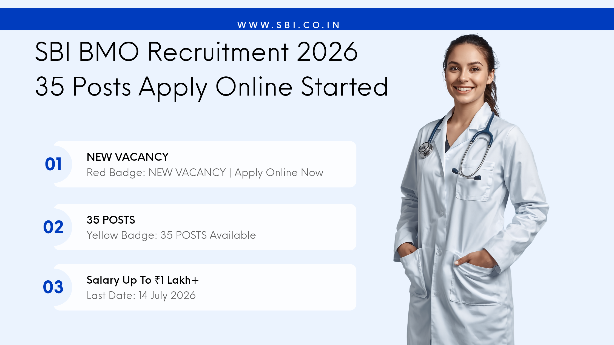

देश के सबसे बड़े सार्वजनिक क्षेत्र के बैंक SBI ने मेडिकल क्षेत्र से जुड़े उम्मीदवारों के लिए एक नई भर्ती अधिसूचना जारी की है। यदि आपने MBBS की पढ़ाई पूरी कर ली है और एक स्थिर तथा सम्मानजनक सरकारी नौकरी की तलाश में हैं, तो यह अवसर आपके लिए महत्वपूर्ण हो सकता है।
स्टेट बैंक ऑफ इंडिया (SBI) ने Specialist Cadre Officer के अंतर्गत Bank Medical Officer (BMO-II) पदों पर भर्ती के लिए आवेदन आमंत्रित किए हैं। इस भर्ती अभियान के माध्यम से कुल 35 रिक्त पदों को भरा जाएगा। इच्छुक उम्मीदवार 14 जुलाई 2026 तक ऑनलाइन आवेदन कर सकते हैं।
| विवरण | जानकारी |
|---|---|
| संगठन | State Bank of India (SBI) |
| पद का नाम | Bank Medical Officer (BMO-II) |
| कुल पद | 35 |
| आवेदन प्रारम्भ | 24 जून 2026 |
| अंतिम तिथि | 14 जुलाई 2026 |
| आवेदन मोड | ऑनलाइन |
उम्मीदवार के पास किसी मान्यता प्राप्त संस्थान से MBBS डिग्री होना अनिवार्य है। इसके अलावा MD, MS अथवा Post Graduate Diploma रखने वाले उम्मीदवारों को प्राथमिकता दी जा सकती है।
31 मई 2026 के अनुसार उम्मीदवार की अधिकतम आयु 35 वर्ष होनी चाहिए। आरक्षित वर्गों को नियमानुसार आयु में छूट प्रदान की जाएगी।
चयनित उम्मीदवारों को Middle Management Grade Scale-II में नियुक्त किया जाएगा। इस पद का बेसिक वेतन ₹64,820 से ₹93,960 तक निर्धारित है।
इसके अतिरिक्त उम्मीदवारों को महंगाई भत्ता (DA), मकान किराया भत्ता (HRA), चिकित्सा सुविधा, पेंशन योजना, अवकाश यात्रा सुविधा और अन्य बैंकिंग लाभ भी प्राप्त होंगे।
अधिकांश मेडिकल प्रोफेशनल्स अस्पतालों या निजी संस्थानों में कार्य करना पसंद करते हैं, लेकिन बैंक मेडिकल ऑफिसर का पद उन्हें बेहतर कार्य वातावरण, निश्चित कार्य समय और आकर्षक वेतन प्रदान करता है। यही कारण है कि SBI की यह भर्ती हर वर्ष मेडिकल उम्मीदवारों के बीच काफी लोकप्रिय रहती है।
यदि आप MBBS या उच्च मेडिकल योग्यता रखते हैं और बैंकिंग सेक्टर में एक प्रतिष्ठित करियर बनाना चाहते हैं, तो SBI BMO Recruitment 2026 आपके लिए एक बेहतरीन अवसर साबित हो सकती है। आवेदन की अंतिम तिथि 14 जुलाई 2026 है, इसलिए अंतिम समय का इंतजार करने के बजाय समय रहते आवेदन प्रक्रिया पूरी कर लें।